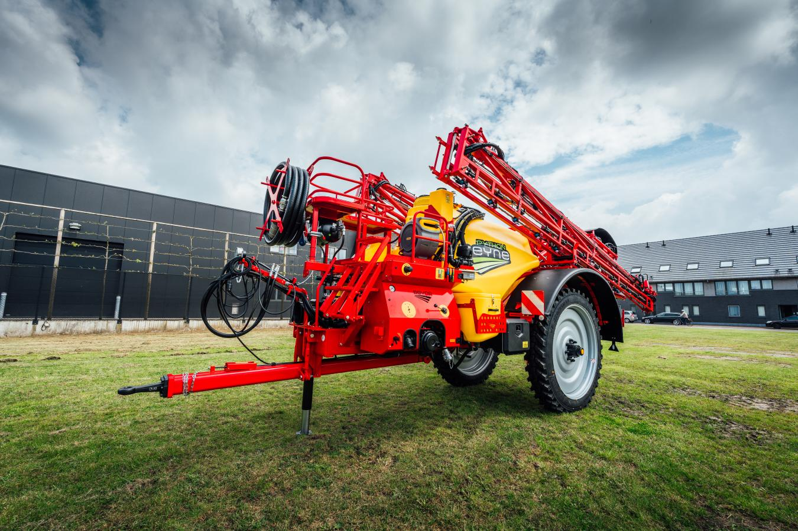

Mise en route
Préparer la machine et effectuer les contrôles avant utilisation.
Ouvrir la formation →
Sélectionnez une formation pour accéder directement à son guide illustré.
Préparer la machine et effectuer les contrôles avant utilisation.
Ouvrir la formation →Configurer le circuit et réaliser le remplissage de la cuve.
Ouvrir la formation →Utiliser correctement le bac incorporateur et ses commandes.
Ouvrir la formation →Mettre la machine au travail et utiliser les fonctions principales.
Ouvrir la formation →Déplier, utiliser et replier la rampe en sécurité.
Ouvrir la formation →Réaliser les opérations de rinçage et de fin de travail.
Ouvrir la formation →Effectuer les contrôles et l'entretien courant.
Ouvrir la formation →Identifier les premières vérifications en cas d'anomalie.
Ouvrir la formation →Générez une fiche d’assistance avec une référence unique.
Créer un ticket →